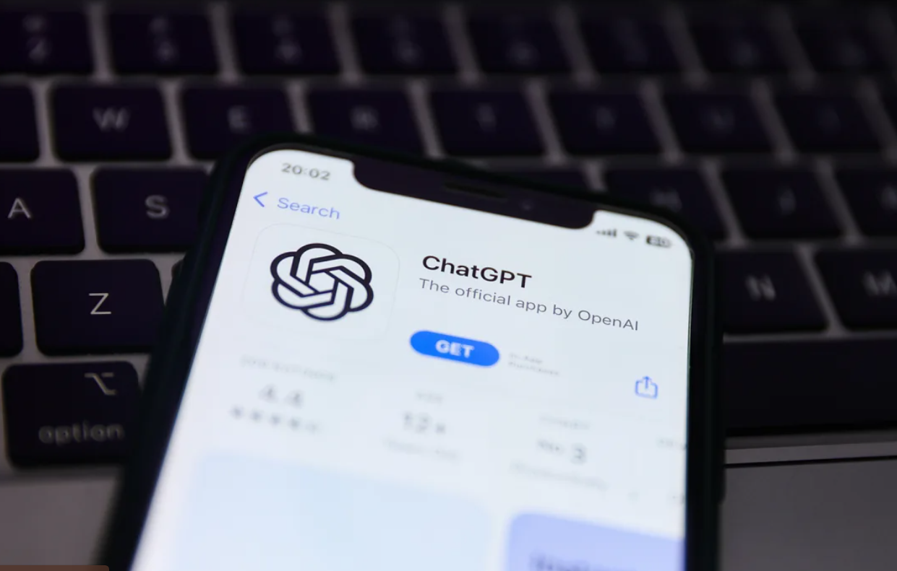

TECHNOLOGY NEWS
| ChatGPT’s 1 year Celebration
A year after ChatGPT’s release, the AI revolution is just beginning
ChatGPT may not be able to perform a cake smash on its first birthday today, but it certainly managed to wow the world and create a mess of hope

30 | Nov | 2023
ChatGPT may not be able to perform a cake smash on its first birthday today, but it certainly managed to wow the world and create a mess of hope, hype, fear and chaos through nearly all parts of the economy in the past year. Its parent company narrowly survived a dramatic board coup, a CEO ouster and executive musical chairs turbulence on the eve of its one-year anniversary as some of its leaders reportedly feuded over the potential consequences of the powerful technology they had created. Wednesday, the company announced Sam Altman is officially back as CEO. One year out, here is how ChatGPT has changed our lives and what could come next
An unexpected lifeline for Silicon Valley
Rewind to this time in 2022 and you see the technology industry reeling from unprecedented mass layoffs and cost-cutting measures that put legions of people out of work and shattered myths about Silicon Valley’s dominance. After an early pandemic rally, Big Tech companies’ stocks plummeted in 2022, shedding billions in market value. At the same time, higher interest rates all but evaporated funding for startups, and a cloud of uncertainty hung over the tech sector that led some to draw parallels to the dotcom bust more than two decades prior. And then, on Nov. 30, a startup called OpenAI released an experimental chatbot dubbed ChatGPT. Seemingly overnight, the user-friendly generative AI technology enraptured the globe. It wowed the public with its ability to carry human-sounding conversations, draft emails and essays and respond to complex search queries with succinct outputs. In just two months, ChatGPT became the fastest-growing consumer application in history, estimated to have reached 100 million active users by January. It spurred an AI arms race among companies that buoyed the bruised tech sector. It fostered a bidding war for top AI talent. It also promised to revolutionize the future of white-collar work — so long as it didn’t cause an AI apocalypse in the process.
'THE WORLD WOKE UP TO THE AI REVOLUTION'
And one year since ChatGPT’s public release, the fervor around AI is still at a fever pitch. Tech giants have poured billions into the technology. Nations are hoarding the chips required for future AI ambitions. And the promises and pitfalls of generative AI are still hotly debated around board rooms and dinner tables across the globe. “It really wasn’t until ChatGPT was put into the hands of people and they could use it themselves, at scale, that the world woke up to the AI revolution and what is happening,” Jeff Clune, a computer science professor at the University of British Columbia and a former research manager at OpenAI, told CNN of ChatGPT’s biggest impact one year out. Clune pointed to how ChatGPT has already made millions of peoples’ lives easier in small and unique ways — such as by helping a non-native English speaker write a cover letter for a job application or aiding a person with specific dietary restrictions in creating a meal plan — but he adds that the tool’s underlying technology’s full effect on society hasn’t even begun to peak. “Many people incorrectly focus on the current, seemingly magical capabilities of AI, without properly looking at the rate of improvement over time. Things continue to get better exponentially,” Clune told CNN. “The stuff that AI can do now is just the beginning.”
OpenAI itself, the makers of ChatGPT, publicly states that its mission is to “ensure that artificial general intelligence benefits all of humanity.” And for most of the year OpenAI executives toured the globe to meet with world leaders, regulators and the public to answer questions and seemingly promote this goal. But then came the pre-Thanksgiving blowup. During a whirlwind five days that unfolded just last week, OpenAI saw its CEO Sam Altman ousted and reinstated to the helm of the company in a vertiginous saga like something from a movie.
The reasons given for Altman’s initial departure were vague. The company said in a statement that the board concluded “he was not consistently candid in his communications,” but offered no further details — even as employees revolted over his exit and threatened to leave, en masse, as well. Sources knowledgeable about the unfolding events told CNN’s Kara Swisher that a factor in the CEO’s firing was tension between Altman favoring developing AI more aggressively and board members who wanted to move more cautiously. But OpenAI and Altman have yet to publicly share what actually went down.
Less than five days after Altman’s ousting — which was marked by two interim CEOs being named for OpenAI and a very brief period where Altman said he was joining Microsoft — the company announced it struck a deal to bring him back as chief executive and that a new initial board had been formed. The company made the news official in a blogpost on Wednesday, the eve of ChatGPT’s one-year anniversary. “I have never been more excited about the future,” Altman wrote. “I am extremely grateful for everyone’s hard work in an unclear and unprecedented situation, and I believe our resilience and spirit set us apart in the industry. I feel so, so good about our probability of success for achieving our mission.” The turmoil, of course, raises fresh questions about how OpenAI can achieve its mission of benefitting all of humanity if the organization could barely keep itself together.